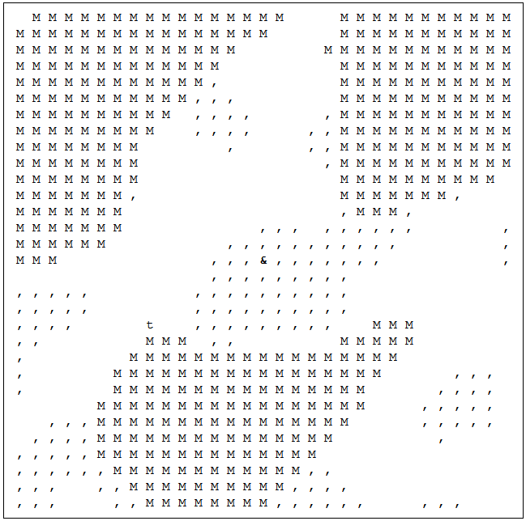

The After Demonstration Kit
Hello! I am SuperQGS, and this is a package of various writing for my game, The After.
The After is currently offline in preparation the alpha stage of development. This page will aim to recreate two types of content present in the pre-alpha.
The Intro was a black screen with white text that played when the players first joined the game, introducing them into the world. The world looked a bit like this:
Events were locations in the world represented by an H or a C (House and City). Walking onto them entered the player into a screen with text describing an enviornment, and buttons for directions to go or actions to take. They could find information or even supplies to add to their inventory. Some buttons might even require an item, like a door that can only be opened with a crowbar
click here to read the introduction. In game it will happen much slower, each paragraph will fade in and have a button prompt the next paragraph fading in. But this is the text.